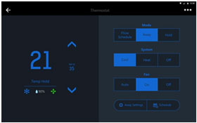

机构养老管理系统
使用场景/项目：独立的养老院，小型连锁养老服务站
HOMBEE提供：
-全套硬件：物联网关+周边智能设备
-应用软件：PC端管理软件、【平板服务端APP】、【手机客户端APP】
-云服务器：直接采用HOMBEE私有云，或者为养老机构部署私有云
A1.物业管理
控制运营成本，提升运营效率；规范化管理、提升服务质量
A1.1 能耗管理系统：实时监控、数据分析定时开关、联动控制
A1.2 环境管理系统：新风系统、环境监测、照明与窗帘
A1.3 人员管理系统：门禁控制、视频监控、【室内定位】
A1.4 【资产管理系统】：重要资产和设备的统计和跟踪
A1.老人监护
预防安全事故，消除责任隐患；老人状态监护，及时发现异常
A1.1 紧急报警系统：紧急呼叫、【跌倒报警】
A1.2 活动监护系统：活动探测、运动计步、【室内定位】
A1.3 睡眠监护系统：心跳、呼吸、体动、离床、睡眠质量
A1.4 体征监护系统：心跳、呼吸、体温、【血压、血压、血氧】
A1.1 物业管理 —— 能耗管理
节能减排：
对各种高能耗设备实施计划任务配置，结合门窗与人体活动感应，有效避免热水器或空调空转导致的能源浪费，节约运营开支。
安全用电：
对养老机构内各房间、各类型负载电路的精确监测，实时统计全院电能开支情况，及时发现违规使用大功率电器等安全隐患。
中控平台
配套智能硬件

入墙插座

移动插座
A1.2 物业管理 —— 环境管理
健康

新风系统
根据室内气体监测指标，
结合新风系统进行换气，
保证室内空气质量
安全
环境监测
通过对烟雾、可燃气体、
漏水等异常状态的监测，
确保场所的安全
舒适
照明系统
根据老人的器具作息规律和生活习惯，
提供舒适的温湿度及照明环境
新风系统 配套智能硬件
环境监测 配套智能硬件
照明系统 配套智能硬件

灯光无线开关
A1.3 物业管理 —— 人员管理
场所管理
通过智能门禁实现出入权限的管控，通过视频实时监控和录制，确保机构内部的场所安全。
服务监管：
通过工作人员的智能胸牌实现身份识别、室内定位、即时互动、现场签到等等，实现更好的服务流程监管，提升服务质量。
配套智能硬件
A1.4 物业管理 —— 资产管理
设备追踪：
通过物联标签对重要仪器设备、高价值护理资产进行统一管理控制，实时掌握各类设备的位置状态。便于出入库管理，设备调拨，离场报警。
A2.1 老人监护 —— 紧急报警
紧急呼叫：
老人在紧急情况下，可以通过固定在床头、洗手间、楼道等各处，乃至随身佩戴的紧急呼叫按钮，寻求护理人员的帮助。
跌倒报警：
通过智能手环或者随身胸牌可判断老人摔倒或昏厥，提醒护理人员第一时间前往帮助。
A2.2 老人监护 ——— 活动监护
活动探测：
通过红外探测传感器，可以识别有人进入某个区域。
运动计步：
通过智能可穿戴设备，可以对老人一天中的活动进行记录。
室内定位：
对进入卫生间浴室、楼道、公共活动室等易发生事故的老人，及时提醒养老机构，派人看护。当失智老人离开监护区域提出警报。
A2.3 老人监护 —— 睡眠监护
基本体征：
实时监测老人睡眠中的心跳与呼吸，及时发现异常情况。
体动识别：
识别睡眠中翻身、打鼾等行为，作为各类结论的依据。对介助老人实施起床、离床监测，防止在无人看护的情况下坠床受伤。
睡眠质量：
通过综合的指标参数，判断深浅睡眠以及睡眠质量，提出建议。
A2.4 老人监护 —— 体征监护
持续性基本体征：
运用可穿戴设备对老人的心跳、呼吸、体温等体征参数进行实时的监测和完整的记录，并对异常给出警告。
周期性健康体征：
运用专业的仪器周期性的测量例如血压、血糖、血氧在内的健康参数。
A2 老人监护 —— 配套智能硬件

睡眠监护仪
居家/社区养老系统
适用场景/项目：居家养老自用，家庭适老化改造，社区养老服务
HOMBEE提供：
-全套硬件：物联网关+周边智能设备
-应用软件：手机 客户端APP、【手机服务端APP】、【PC端管理软件】
-云服务器：HOMBEE私有云
管理品台
B1.居家/社区养老系统 —— 安全监护
紧急呼叫：
紧急呼叫按钮
危险预防：
煤气泄漏、室内烧纸烧香、水龙头遗漏
异常警报：
老人跌倒、在浴室等危险区域长时间滞留
走失报警：
异常出门、在外迷路
B2.居家/社区养老系统 —— 适老改造
为老人家庭提供包括空调控制，灯光窗帘，安防警报，环境监测，视频监控，智能门锁等在内的一系列智能硬件，
为老人提供更加健康、舒适、便利的居住环境。
B3.居家/社区养老系统 —— 体征监护
睡眠监护：
心跳、呼吸、体动、离床、翻身、打鼾、睡眠质量
体征监护：
心跳、呼吸、体温、血压、血氧、血糖
B4.居家/社区养老系统 —— 互动关怀
家属信息推动：
系统会将老人的异常状态推送到子女家属的手机上
社区服务预约：
系统提供预约上门服务
可视对讲：
一键呼叫与子女可视聊天，上门服务监督，远程视频看护
陪伴机器人：
语音识别与交流，提供娱乐与陪伴
系统整合配套方案
适用场景/项目：将HOMBEE的硬件系统或软件模块与第三方养老平台进行深度整合
通过二次开发满足具体项目的特殊要求。
HOMBEE提供：
硬件系统、软件模块、技术接口、技术支持
C1.对接欧万硬件系统
硬件系统：
将HOMBEE所有的硬件整合到物联网关，提供一个完整的硬件系统。
CPI接口：
同时HOMBEE提供完整的CPI通讯协议、技术文档、技术支持，可将全套的硬件系统整合到第三方的养老管理平台。
使该养老管理平台具备对于底层硬件的数据采集和控制功能。
C2.对接欧万软件模块
软件模块：
HOMBEE服务器与其硬件系统对接后，在服务器上完成标准化养老管理系统的程序开发。
API接口：
第三方可以采用HOMBEE提供的服务器API，将HOMBEE的成套系统或者部分软件模块整合到其养老管理平台之上，
以最小的工作量快速实现HOMBEE系统具有的软、硬件功能
数据增值配套服务
适用场景/项目：提供数据增值服务给大型养老平台的"智能数据中心"，
第三方机构(民政、医疗、社区、金融)，或大数据平台。
HOMBEE提供：
-数据分析：HOMBEE私有云平台提供自带的数据分析功能
-数据入口：通过标准的API，提供原始数据给经过授权的第三方
D1.数据分析
在机构的运营过程中持续采集有效的数据，储存在HOMBEE的私有云平台上，并进一步进行数据分析，
为机构的运营提升和老人的生活改善提供必要的参考。
D2.数据入口
提供数据接口供通过授权的第三方对接，以便将系统中采集到的各类原始数据导入到第三方的平台，
以便第三方进行数据分析或者扩展更广泛的用途。